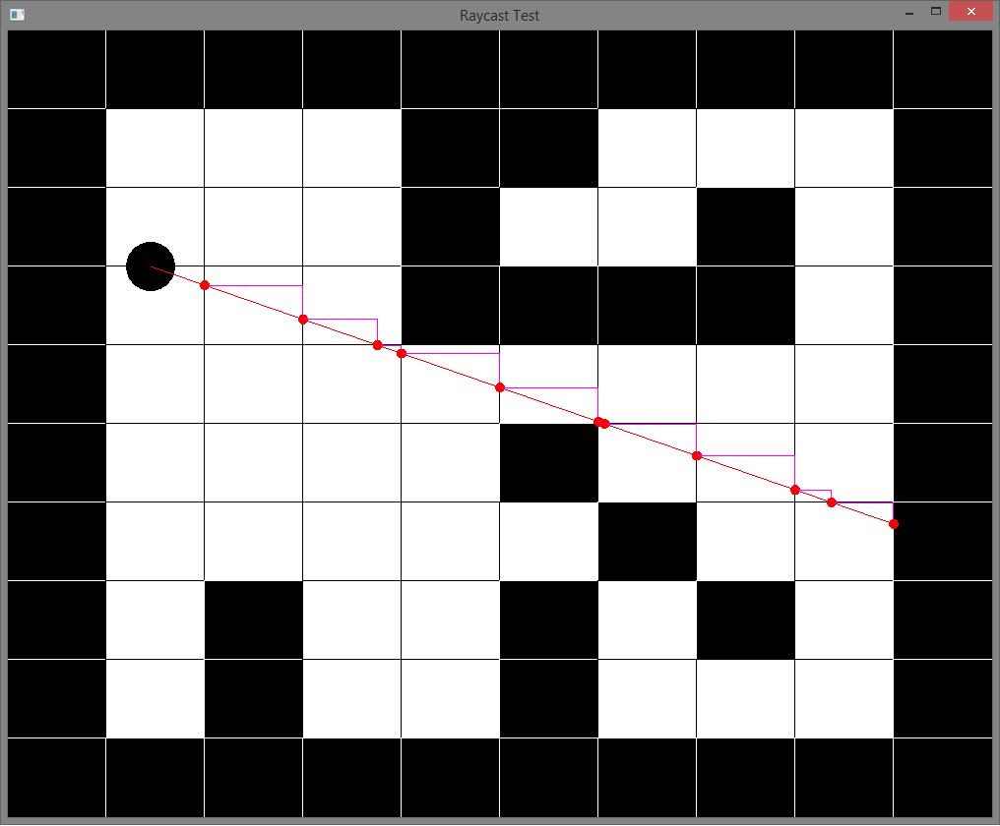
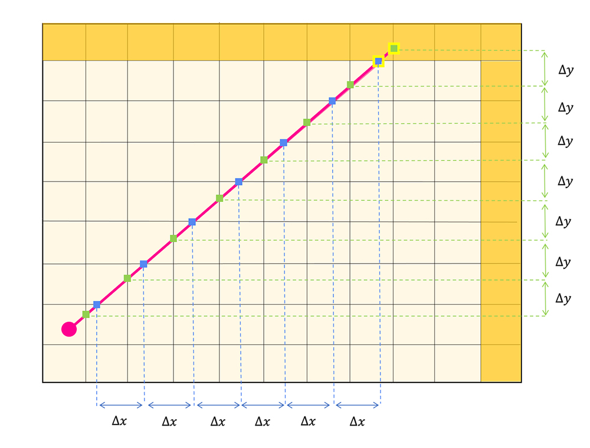

Matriz mundo
Debemos empezar definiendo una matriz 2d, cada celula de esta matriz representa ya sea una pared o un pasillo, lo importante es que todas las celulas de esta comparten el mismo ancho y la misma altura
Graficos en computadora
Ángulo: 45° Tangente: 1.00Es crucial entender la diferencia fundamental entre la representación de ángulos en gráficos de computadora y en libros. En los libros, los ángulos incrementan en sentido contrario a las manecillas del reloj, mientras que en los gráficos de computadora, los ángulos incrementan en sentido de las manecillas del reloj además de que la componente Y crece hacia abajo. La razón a estas diferencias radica en las convenciones adoptadas para asegurar una representación coherente y eficiente de las imágenes en pantalla.
Algoritmo DDA
Primero debemos encontrar las primeras distancias delta-x y delta-y, todo lo que necesitamos hacer es incrementar estos deltas hasta encontrar una intersección con la pared. Esta técnica de encontrar la diferencia e incrementar el mismo valor cada vez se llama a veces "algoritmo DDA".
DDA significa "Analizador Diferencial Digital". Es un nombre poco atractivo para algo que en realidad no es tan difícil. Este conjunto de algoritmos se ocupa de cómo interpolamos valores desde un valor de inicio hasta un valor final.
En nuestro caso, nuestro algoritmo DDA simplemente define cuánto debe incrementarse en cada paso y procede a incrementar los mismos valores delta-x y delta-y en cada iteración de nuestro bucle. Continuamos incrementando hasta encontrar la intersección con la pared que estamos buscando.
Sin embargo hay 2 casos a revisar: intersecciones horizontales/intersecciones verticales, luego esto se va a reducir a cual caso nos da la menor distancia
